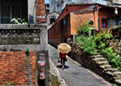

埔頂攬勝－紅毛城、砲台、忠烈祠、埔頂區、一滴水紀念館、和平公園
埔頂一帶是顧守淡水河口的美麗山崙，臺灣最早與世界接軌的門戶。從西荷時期，歷經明鄭、前清、日治，到當代，不僅是歷史風雲際會所在，也是全台最富異國色彩之地。從紅毛城、牛津學堂到小白宮，不斷述說著淡水埔頂傳奇。
大屯飛翠－水梘頭、三空泉、大屯溪、屯山花海
大屯山蘊藏著多處怡人景緻，水梘頭、三空泉、大屯溪等美景無一不令人嚮往。遠觀大屯山，翠玉般的鮮嫩色澤彷彿就要飛向天際，向天空散開，而藍天白雲又與花海交織繾綣，真可謂是一幅天造的奇麗漫妙圖畫。
沙崙看海－漁人碼頭、沙崙海水浴場、油車口旁
淡水沙崙是大台北最接近海之處，也是大台北視野最寬廣的出海口。站在漁人碼頭、沙崙海水浴場，甚至是附近的油車口，看海、看夕陽。那蒼茫的雲、無際的海，與人如此的貼近！風起雲湧，海闊天空，彷彿可以御風駕海而行。
水岸畫影－金色水岸、夜景
淡水乃昔日的國際港埠，處處可見夾雜著異國情趣的歐風建築，山城街屋層次多變，河景燈火明滅多采。而淡水河畔，水面如鏡，水岸影象栩然躍動，隨著觀音山景四季更異，映畫著一幕幕人文與自然交會的景緻，令人流連忘返。
紅樹傍橋－紅樹林、關渡大橋 紅樹林是生長在鹹淡水交會中的赤子，天真爛漫，隨著潮與浪搖曳在淡水河畔，其中孕育著彈塗魚、白鷺鷥、招潮蟹，處處顯生機。而綿延的紅樹林更簇擁著壯麗的關渡大橋，增添關渡橋駕馭臨風之感，美不勝收。
河口霞天－夕照 淡水河波光粼粼，水面漸漸開展，到河口一帶注入大海，呈現海闊天空的勝景。每當黃昏時分，夕暉渲染天際，霓霞宛若彩筆，恣意綿延這天造的調色盤，所有的色彩都令觀者目眩神馳，留下「最美夕陽紅」的永恆印象。
觀音水月－觀音山、夜景
夜裡，無論漫步淡水河畔抑或從行駛中的捷運上，隔著河看觀音山，山景倒映在深色的河面，與白日有著迥然不同的神秘景致。夜裡的淡水河宛如一位優游自在的魔術師，星空明月在其魔法下，令觀音山的剪影幻化無窮，令人嚮往。

滬街訪古－淡水老街、寺廟 滬尾街，淡水老街舊巷，蜿蜒曲折、曲徑通幽，自古即為淡水居民生活重心，記錄著淡水點滴史蹟，各有其耐人尋味的故事。探訪重建街廓、古蹟寺廟、百年老店、洋行殘跡，猶如翻閱一本淡水歷史事件簿。老街百態，永存。